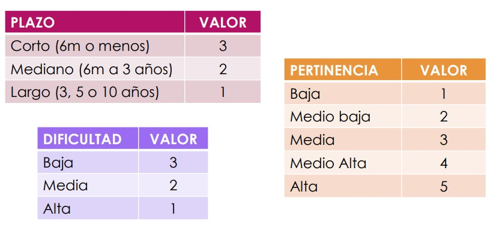
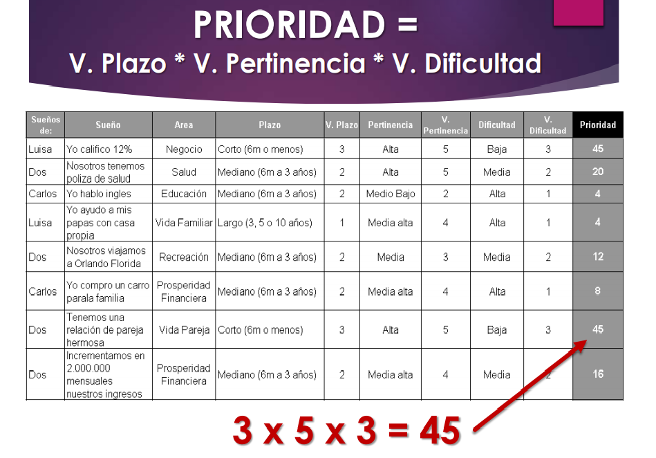
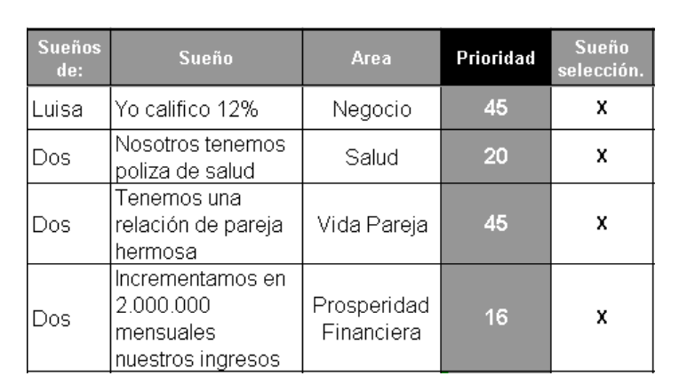
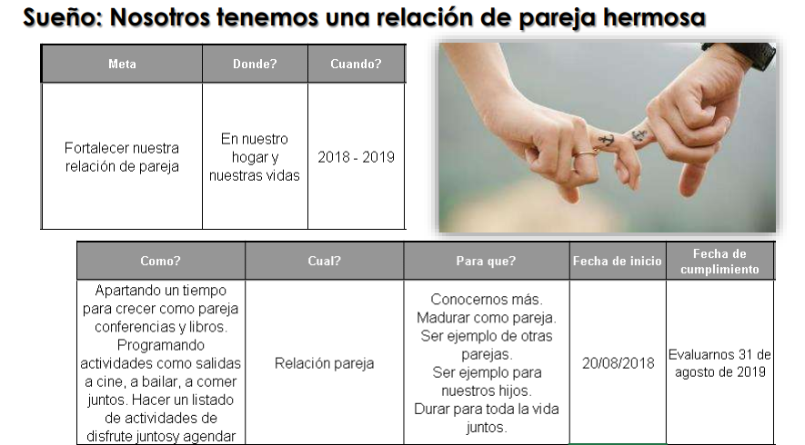

Agosto 20 de 2018
Pasos para programar tus sueños
PERSONAL

1- Rrealiza una lista de mínimo 101 sueños todos los que quieras realizar en tu vida y que desde muy pequeño has querido, no importa que sean los sueños mas locos si desarrollas los pasos correctos estos se podrán realizar, recuerda que los sueños son una gran fuente de energía, así si lograras que tu vida sea potencializada al maximo.
2- Escribe cada uno de ellos en el formato que encontraras en el siguiente link Formato de sueños.
3- Define en que área se encuentra tu sueño : Vida Espiritual, Salud, Cuidado Personal, Vida Social, Hijos, Vida familiar.
4- Defina el área, plazo, pertinencia y dificultad de cada sueño que elegiste.
5- Valores para plazo , pertinencia y dificultad.

6- Luego de elegir los valores de cada uno de los sueños reliza la multiplicacion de estos

7- Con los resultados obtenidos vamos a seleccionar los 20 sueños con mayor calificación, estos serán los que les daremos mayor prioridad, entra al siguiente link y descarga el formato para los 20 sueños 
8-Describo cada uno de los sueños escogidos como en este ejemplo.

9-Ahora si es tiempo de crear nuestro mapa de los sueños.